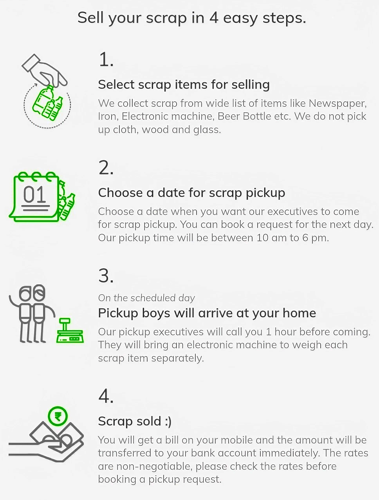

<ion-header [translucent]="true">
  <ion-toolbar>
    <ion-title color="light">About Application</ion-title>
    <ion-buttons slot="start">
      <ion-back-button color="light"></ion-back-button>
    </ion-buttons>
  </ion-toolbar>
</ion-header>

<ion-content [fullscreen]="true">
  
</ion-content>
